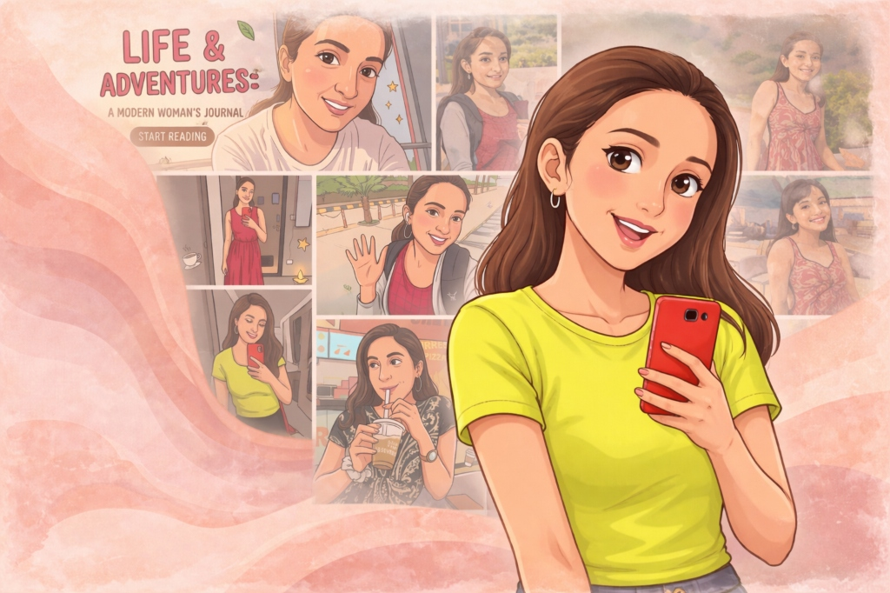

Welcome to my corner of the internet! I’m Sanjana, a curious person with a lot of energy and a bit of a stubborn side that usually helps me get things done. I make it a point to stay positive every day and focus on the things that actually make me happy. Whether I’m dancing to my favorite song during a workout, heading to the movies by myself, or loudly cheering for RCB, I believe in just being myself and enjoying the moment.
I started this "unfiltered" blog to share my real journey through the things I love. You’ll find me hunting for the best plate of biryani in town, reading a good Kannada book on the metro, or heading out on a solo trip to explore somewhere new. This space is all about the small, fun details and the lessons I learn along the way. I’m really glad you’re here to follow along!
